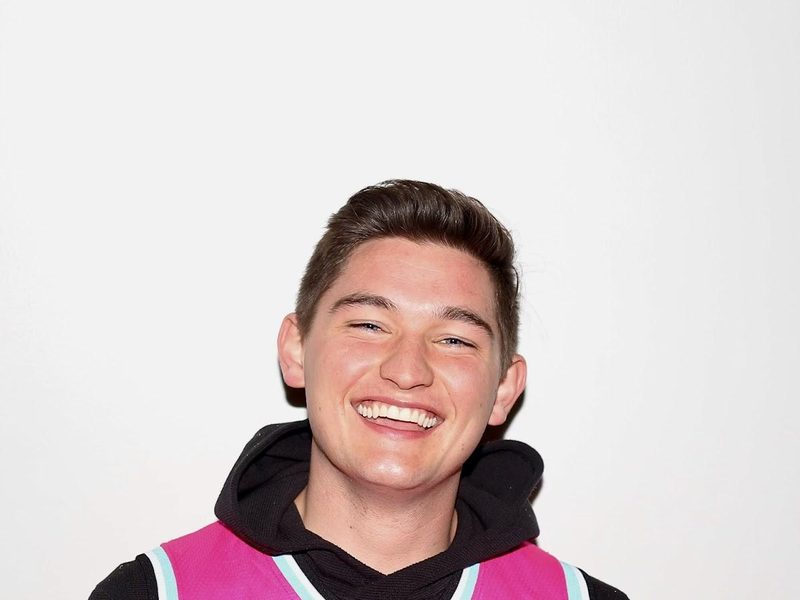
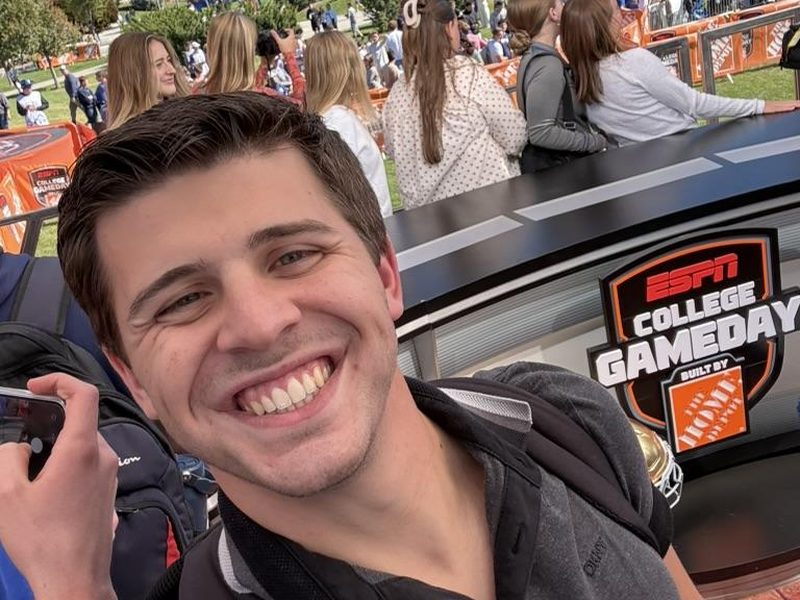
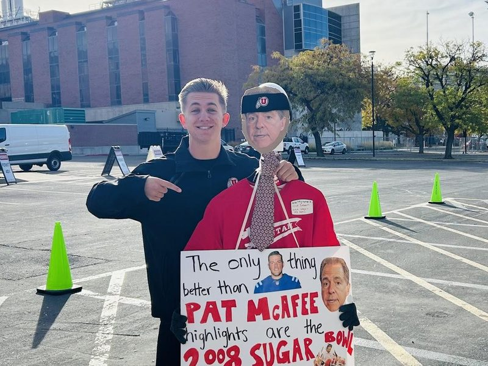

Not every great college football story happens under the brightest lights.
Elevation Change is an independent sports publication built around the teams that don't always get the coverage they deserve — particularly across the Western Group of Six.
We believe those programs deserve more than a score, a box score, and a three-paragraph recap buried underneath Saturday's biggest games. They deserve stories. They deserve analysis. They deserve personalities, rivalries, traditions, heartbreak, and, occasionally, someone making fun of the absolute nonsense that is college football.
Our coverage spans the Mountain West, Pac-12, and the wider Western Group of Six, bringing serious football analysis together with humor, personality, and a genuine investment in the teams that make the West unique. The goal is simple: make you smarter about the teams you follow, introduce you to teams you didn't know you cared about, and hopefully make you laugh along the way.
The name is a nod to the mountains that define the West — and to what we're trying to do with its sports coverage.
Change the elevation. Give the little guys a bigger stage.
The West is full of great stories.
We're here to tell them.
-

Preston Thompson
Founder & Creator
Preston Thompson is the creator and founder of Elevation Change and a current student at Brigham Young University, where he studies Business Management. A lifelong sports enthusiast, Preston follows just about everything, with a particular passion for college football, college basketball, the NFL, NBA, NHL, track and field, and cross country.
Growing up, Preston cheered for the University of Utah, Oregon, and BYU across their respective athletic programs. Later, while dating his wife in Logan, Utah, he developed an appreciation for the Utah State Aggies as well. Whether it was football, basketball, or just about any other sport, Preston could usually be found losing his voice cheering for teams from Utah and the surrounding region. The one exception? The Philadelphia Eagles.
As a kid, Preston spent countless hours watching ESPN and wondering why nationally recognized analysts so often overlooked talented teams from Utah and the West Coast, particularly those competing in the Pac-12 and Mountain West. He believed these programs deserved the same level of attention, analysis, and national coverage as the major programs across the country. That belief eventually became the inspiration behind Elevation Change. Preston saw an opportunity to help close that gap by providing in-depth coverage, data-driven analysis, and meaningful national exposure to programs that too often get overlooked.
Outside of sports, Preston enjoys trail running, skiing, and fishing.
-

Tyler Angerbauer
Lead Beat Writer
Tyler is the lead beat writer for Elevation Change. He is a senior at Brigham Young University majoring in journalism with an emphasis in sports media. He is an avid fan of baseball and football, especially the professional teams in the Dallas/Fort Worth area (except for the Mavericks — Go Spurs Go).
He loves getting to tell and share stories and aspires to one day be a play-by-play broadcaster.
Outside of sports, Tyler loves hiking, roller coasters, singing, and finding as many different species of birds as he can.
-

Brooks Barney
Lead Content Producer
Brooks is the lead content producer for Elevation Change. He's a junior at Utah Valley University studying finance with a minor in Spanish, and yes, he's a die-hard Utah Utes fan who loves Saturdays in the fall more than anything.
He's also a Utah Jazz fan, and he's happiest turning big sports moments into content fans want to share.
Outside of sports, Brooks loves running, camping, playing whatever pickup game is going, or taking over the mic at karaoke.